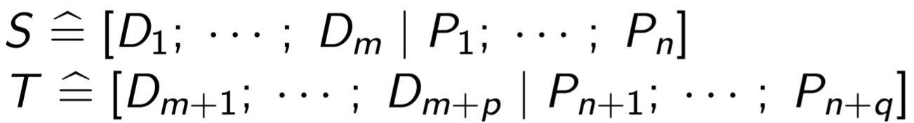
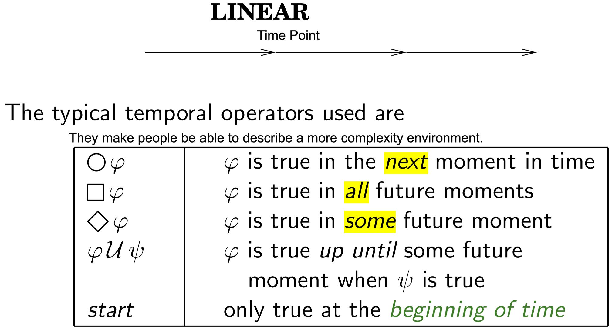
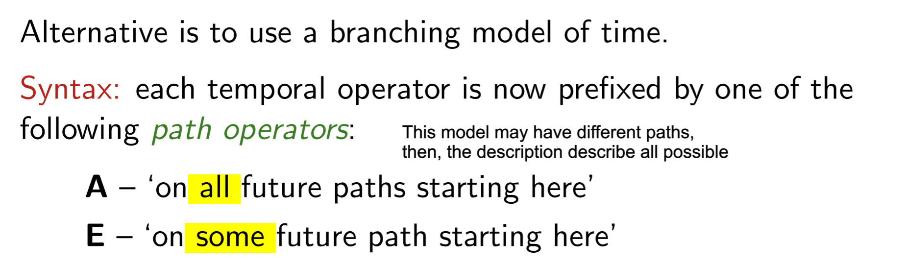
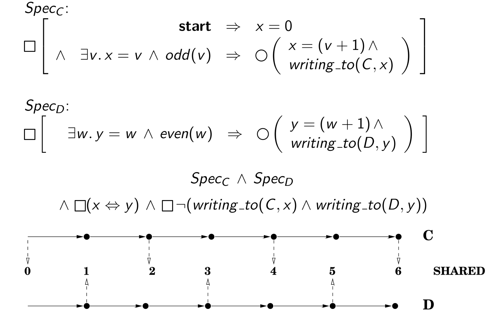

2. Z Language
2.3 Data Structure
2.3.1 Set
2.3.2 Seq
- 特点:
- 有顺序,
- 有重复.
- 表达方式:
<,...,>: 用enumeration表示一个Sequence;seq Type: 表示由该type元素构成的所有的Sequence
- Seq的本质:
- Sequence的本质是一个function, 因此任何对function的操作都可以直接用在sequence上;
- seq T = {f: N1⇸T | domf = 1..#f}
- 支持操作:
σ1⌢σ2Concatenation:
返回一个将sequence σ1 和 σ2 的内容结合在一起, 按照 σ1, σ2之间的顺序和它们内部的元素顺序排序的数组;<1,2>⌢<2,4> = <1,2,2,4>;rev σReverse:
返回一个将 σ 内部的元素顺序颠倒的新数组;#<1,2,3,4,5> = <5,4,3,2,1>;#σCount:
返回σ内部元素的数量;rev<1,2,3,4,5> = 5;sequence σ | set AFilter:
返回一个只含有A中元素的数组, 其中元素的顺序按照 σ 中元素排列的顺序;<5,4,3,2,1>|{1,2,3} = <3,2,1>;sequence σ after number n:
返回一个被移除前n个elements的σ;<5,4,3,2,1>after2 = <3,2,1>;map f σ:
返回一个用所有σ中element为function f 的input 生成的Output组成的结果的集合;f(x) = 1+x; map f <1,2,3> = <2,3,4>head σ:
返回数组的第一个值. 如果是empty数组, 那么返回undefined;head <2,3,4> = 2; head ∅ = undefined;last σ:
返回数组的最后一个值. 如果是empty数组, 那么返回undefined;last <2,3,4> = 4; last ∅ = undefined;front σ:
返回一个移除数组σ最后一个值的数组;front<1,2,3> = <1,2>;tail σ:
返回一个移除数组σ第一个值的数组;tail<1,2,3> = <2,3>;
2.3.3 Bag
- 特点:
- 无顺序;
- 可重复;
- 表达方式:
[[,...,]]: 使用enumeration和两个方括号表示bag;bag Type: 使用定义表达所有由该type组成的bags的集合;
- 本质:
- Bag的本质也是一个function, 因此任何对function的操作都可以直接用在Bag上;
- bag T = {f: T⇸N1}
- 支持操作:
x in BMembership:
检查element x是否在bag B中至少出现一次;a in [[a,a,b,b]]B1⊑B2Sub-bag:
B2中的元素出现频率比B1中的元素出现频率更高;[[a,b]]⊑[[a,a,b,b]]B # xCount element:
计算元素x出现在Bag B中的次数;[[a,a,b,b]] # a = 2;n⊗BScaling Bag:
返回一个元素出现数量在原有的Bag B中增倍n次的新Bag;2⊗[[a,b]] = [[a,a,b,b]]B1⊎B2Bag Union:
返回一个包含B1和B2全部element的Bag;[[a,b]]⊎[[a,a,b,b]] = [[a,a,a,b,b,b]]items σ:
返回一个和Seq σ有相同元素的Bag;items<a,b,a,b,c> = [[a, a, b, b, c]];
2.2 Schema
2.2.1
2.2.2 Calculus
- 定义: Z-language 提供的一种使用 Propositional logic 去处理结合多Schema, 以此表达更加复杂的logic;
- 前提:
- 被Propositional Connectiveness处理的两个Schema需要满足两个Schemas是type compatible的;
- 如果两个Schemas是type compatible 意味着这两个Schemas的Common Variable是same type;
- Combination:
- 将两个Opertion用特定的一元或者二元连接符号处理;
- 例如: ;
 ;
;
3. Temple Logic
3.1 Basic Conception
3.1.1 什么是Temple Logic
- TL 是Classic Logic的扩展, 经常被用于描述复杂的问题.
- 和Classic Logic比起来Temple Logic在语句中描述了不同的环境, 相同的语句在不同的环境中, 结果可能不同.
- 而转化不同环境的方式就是时间;
3.1.2 Kinds
- Linear Model:
; - Branch Model;
;
3.2 Semantics
3.2.1 Model
- Model = <S,R,π>
- S 表示所有可能的状态;
- R 表示状态之间转化的relations;
- π : S → PPROP, 用来表示Properation和State之间关系的Function. 输入为State, 输出为当前state下的Properation
- Model = <N,π>
- N: 是在Linear model中的简化模型, N表示所有有可能的State {s1,s2,s3...}
- π : N → PPROP maps each moment in time to a set of propositions.
3.2.2 Interpretation Relation
- |= 被用来解释Temple Logic的语义;
- 当世界为M并且描述的状态处在Index i时,
<M,i> |= ϕ为真表示在state i时, ϕ成立. - 也就是说
<M,i> |= p iff p ∈ π(i);
3.2.1 Operation
- Start: 表示逻辑描述的开始
<M,i> |= start iff (i = 0); - Next: 表示在接下来一个state, 某个properation为真
<M,i> |= ○ϕ iff <M,i+1> |= ϕ - Sometime: 表示不确定什么时候某个properation为真, 但是最终一定会为真
<M,i> |= ◇ϕ iff there is j(>i) and <M,j> |= ϕ - Always: 表示某个properation一直为真,
<M,i> |= ◻ϕ iff for all j, j>i <M,j> |= ϕ - Until: 表示某个properation一直为真, 直到另外一个Properation为真.
<M,i> |= ϕµψ iff there is j(≥i) so that <M,j> |= ψ and for all (j>)k(>i), <M,i> |= ϕ - Unless: 类似于Until但是和Until不同的是, Unless不保证ψ发生,这意味着有可能一直保持某个状态;
<M,i> |= ϕwψ iff<M,i> |= ϕµψ or <M,i> |= ◻ϕ
3.3 Extension
3.3.1 Program and Temporal formulae
- 一种将Program Pseudocode 转化为Temporal formulae的方式, formal并且准确的描述了, System的Actions;
- Style:
[[Program]]: program pseudocode → temporal formulae - Tranform:
[[x:=v; S]] = ∃w.nx = w ∧ (x = v(x/w) ∧ [[S]])
3.3.2 Refinement
- 细化Specification;
- 表示方法: ϕ ⇒ ψ (表示ϕ 细化了 ψ);
- 在细化后的Specification为True的情况下, 原本的Specification一定为True;
- Spec2 ⇒ Spec1
- Spec1 = p ∧ ◇q;
- Spec2 = p ∧ ○q;
3.3.3 Concurrency
- 并发或者中断:
- Concurrency: Components 之间相互不影响, 每个Component Simultaneouly执行自己的程序;
- Interleaving: Components 之间相互不影响,一次只有一个Component可以执行, 所有每个Components都是周期性的运行;
- 同步或者异步:
- Synchronous: 所有的Components的时间单位都是相同的, 因此每个component对next moment都有相同的概念;
- Asynchronous: Components之间的时间的单位是不同的, 因此他们对next moment的概念不同;
3.3.4 Communication
Temploral Logic 可以表示多种不同的Components相互交流信息
- Shared variables: 一种通过某些共享的变量来进行交流的方式;
- 读或者写都是atomix的action;
- 并且一次只有一个components进行读或者写;
- 在Temporal Logic中实现Shared, 需要满足 1) 所有的Components都看到相同的数据, 2)而且能够看到数据的更新, 3) 在任何时候只有一个component能更新这个数据;
- 如果在两个Components的Temporal Formula中存在Shared Variable (a in C1, b in C2): 那么我们需要
◻(x ⇔ y)来满足1)和2), 用writing to(C, x)来表达Component C现在正在write variable x;
- Message passing: 一种通过中间介质来进行交流的方式;
- 信息交换快(几乎是瞬间发生的);
- 信息交换通过两个方法snd()和rcv()
- 
- Channel communication:
- 组件之间通过Channel交流, 如果两个不存在Channel那么就不可能进行交流;
- Synchronised Communication: 一次只有一个Components使用Channel, both读或者写;
- Linking specification:
- 确定specification中components匹配的信息输入和输出形式. 如果出现对应的properation, 就表示Componnets之间进行Communication;
- 例如存在两个Properations Set In and Out. 如果所有In 中的Properations都出现那么就表示, component 收到一个信息. 如果所有out中的Properation都出现那么就表示, Components 发送一个信息;
- 所以一个存在Communication的system可以通过
Spec1 ∧ Spec2 ∧ Comms(Spec1, Spec2)来表达, 其中Comms(Spec1, Spec2), 表示交流在Spec1和Spec2中表示的properations - 如果 p ∈ Out(Spec1) and q ∈ In(Spec2), 那么就Comms(Spec1, Spec2)为
◻(p⇒○q);
3.3.5 Safety and Liveness
- Safety:
- Something bad will not happen;
- Expression:
◻¬ p
- Liveness:
- Something good will eventually happen;
- Expression:
◇ p
- Fairness:
- if something is required infinitely often, then it will be succeed infinitely often.
- Expression:
◻◇required ⇒ ◻◇succeed
4. Exam Question
4.1 About Model Check
4.1.1 Partial-Order Reduction
- Definition:
- A technique
- reducing the search space
- requires pre-processing.
- Pre-process:
- remove some executions basing on the formula verified.
- Motivation:
- Asynchronous and interleaved concurrency
- => too many possible executions.
- But Exist equivalent representation of the formula;
4.1.2 Abstract
- Definition:
- A technique
- reduces an infinite state system to a finite state one.
- Under approximations:
- removes irrelative to the properties checked;
- Over approximation:
- replaces infinite values variables => finite values variables;
4.1.3 On-the-fly model checking
- Model Check:
- Check if a system S satisfies the specification ϕ
- Through checking if there is a acceptable value for an auto~ BSx¬ϕ;
- However, the auto~ is too large to construct and to check
- On-the-fly:
- does not build the full product, but only the needed parts.
- reduces space requirement
4.1.4 Automata-theoretic Approach
- Motivation:
- Model checking is labourious;
- Definition:
using a equivalence accepted_by(BAprogram × BA¬ϕ) = ∅ to check the model:- BAprogram:
- a Buchi Automaton
- all executions of a program;
- BA¬ϕ
- a Buchi Automaton
- negation of the properties in specification
- BAprogram × BA¬ϕ
- a Buchi Automaton
- specifies all executions and satisfies all negative properties;
- accepted_by:
- a function;
- returns all accepted sequences of an automaton;
- BAprogram:
4.2 About TL
4.2.1 Dense and discrete model
- Dense:
- for any two moments a and b, there is a moment c between a and b.
- So there are infinitely moments between a and b;
- Dense time models are the rationals and the reals.
- Discrete:
- no moment between a and b;
- Discrete time models are the naturals or the integers;
4.1.2 Until
(l ∧ a) U(l ∧ (l ∧ b) U c)
- 假设存在一个Model满足 ϕ = (l ∧ a) µ (l ∧ (l ∧ b) µ c) .
- 我们需要证明 ψ = l µ c is also satisfied.
- 在一个Model中如果ϕ满足, 意味着l一直满足直到某一时刻n(moment of time ) (l ∧ (l ∧ b) U c)满足;
- 因为(l ∧ (l ∧ b) U c)满足, 所以着l一直满足直到某一时刻c满足
- 这意味着l一直满足直到c满足(ψ满足).
4.2.3 Infinitely Often
- forced to occur: at least once
4.3 About TL
4.3.3 Refinement
- Definition:
- to refine specifications as part of program development;
- Signal:
- ϕ ⇒ ψ means for all π, if hN, πi |= ϕ then hN, πi |= ψ.
- Motivation:
- reduces # of models;
- reduces # of execution sequences.